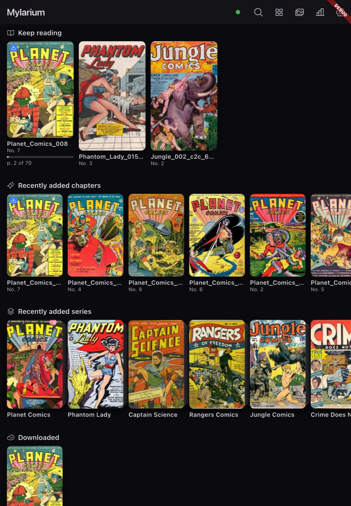
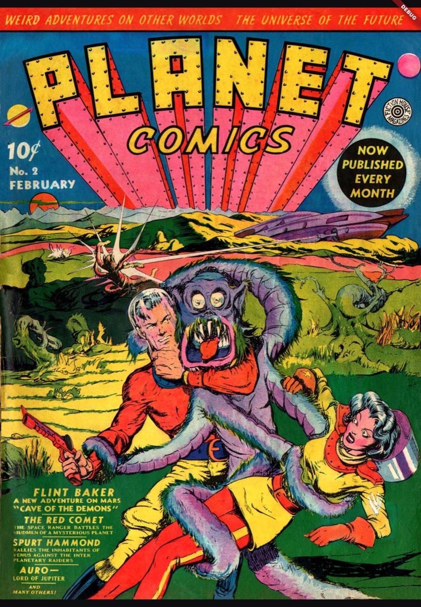
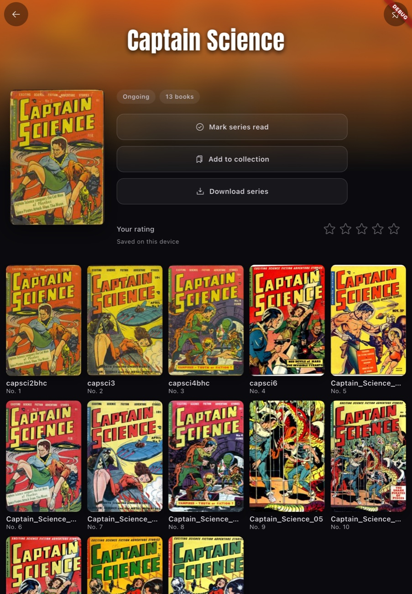

A premium, cover-forward comics and manga reader for Android, backed by your self-hosted Komga or Kavita server with always-on offline reading.
Download latest release Download Android APK, build iOS yourself from source code

